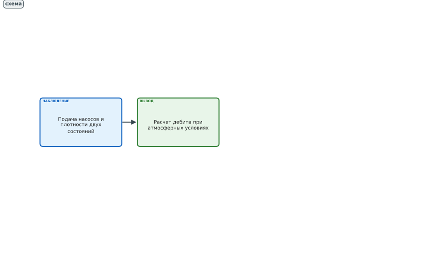
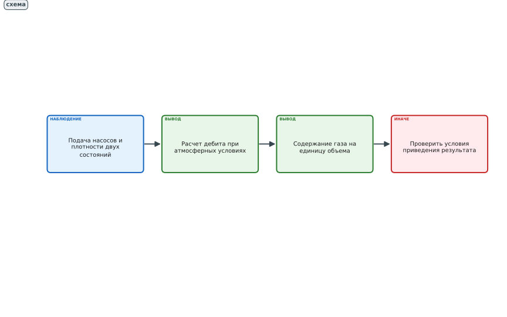
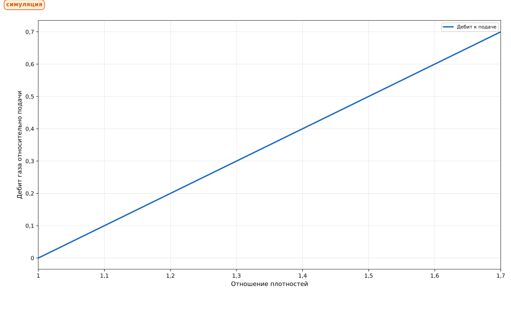

Стр. 236 · 4.1.1. ПРИЗНАКИ ПРОЯВЛЕНИЙ
Когда содержание газа контролируют по плотности бурового раствора, то дебит газа в атмосферных условиях можно найти по формуле
Признаки проявлений; ликвидация нефтегазопроявлений при бурении скважинШаг 12 из 26
В книге: «Как по плотности оценивают газосодержание» стр. 236–237
Опирается на: шаг 9 «Откуда берется газ в растворе» (предпосылка), шаг 11 «Газ после паузы в циркуляции» (предпосылка)
Дебит газа — объем газа за единицу времени.
Его можно оценить по подаче насосов и плотности газированного и негазированного растворов.
Пороговая идея. Раздельно объяснить оценку дебита газа и приведение газосодержания к нормальным условиям. модель





Почему нужны два замера плотности?
Допущения: Условная схема; блоки не задают временной масштаб или размеры оборудования.; Диапазон отношения плотностей условный; дебит нормирован на подачу..
Используют подачу насосов. При контроле по плотности рассчитывают дебит в атмосферных условиях. Нужны плотность негазированного и плотность газированного раствора. Это два разных состояния одного рабочего раствора. Содержание газа выражают на единицу объема раствора и приводят к нормальным условиям. стр. 236–237
«Когда содержание газа контролируют по плотности бурового раствора, то дебит газа в атмосферных условиях можно найти по формуле»
«плотность негазированного и газированного растворов.»
«Содержание газа в единице объема раствора в восходящем потоке газа, приведенное к нормальным условиям,»
Оценка дебита газа в атмосферных условиях стр. 236
| Обозначение | Что это | Единицы |
|---|---|---|
| $g_1$ | дебит газа | — |
| $Q$ | подача насосов | — |
| $\rho_0$ | плотность негазированного раствора | — |
| $\rho_{гр}$ | плотность газированного раствора | — |
Содержание газа на единицу объема раствора стр. 237
| Обозначение | Что это | Единицы |
|---|---|---|
| $a_0$ | содержание газа на единицу объема | — |
| $g_r$ | обозначение дебита в этой формуле | — |
| $Q$ | подача насосов | — |
Раздельно объяснить оценку дебита газа и приведение газосодержания к нормальным условиям.
Проверка контекста события в журнале перед интерпретацией метрики.
Где аналогия перестаёт работать: События в стволе физические, а показания могут запаздывать.
За рабочими решениями обращаются к действующему регламенту и ответственному специалисту; этот узел объясняет учебный пример.
События в стволе физические, а показания могут запаздывать.
Верный ответ: Подача насосов; Плотность газированного раствора; Плотность негазированного раствора
Нужны плотность негазированного и плотность газированного раствора. Где это в тексте (стр. 236) →
Закончите условие, при котором записан дебит.
Дебит рассчитывают для условий.
Верный ответ: Дебит рассчитывают для [атмосферных] условий.
Используют подачу насосов. Где это в тексте (стр. 236) →
Все утверждения шага с дословной цитатой автора и страницей книги (по PDF).
Дебит газа в атмосферных условиях рассчитывают при контроле газа по плотности раствора. наблюдение
«Когда содержание газа контролируют по плотности бурового раствора, то дебит газа в атмосферных условиях можно найти по формуле»
В расчете различают плотность негазированного и газированного растворов. наблюдение
«плотность негазированного и газированного растворов.»
Содержание газа выражают на единицу объема раствора и приводят к нормальным условиям. наблюдение
«Содержание газа в единице объема раствора в восходящем потоке газа, приведенное к нормальным условиям,»
Стр. 236 · 4.1.1. ПРИЗНАКИ ПРОЯВЛЕНИЙ
Когда содержание газа контролируют по плотности бурового раствора, то дебит газа в атмосферных условиях можно найти по формуле
Стр. 236 · 4.1.1. ПРИЗНАКИ ПРОЯВЛЕНИЙ
$$g_1 = Q(\rho_0/\rho_{гр} - 1), \tag{4.1}$$
Стр. 236 · 4.1.1. ПРИЗНАКИ ПРОЯВЛЕНИЙ
где $Q$ — подача насосов; $\rho_0$, $\rho_{гр}$ — плотность негазированного и газированного растворов.
Стр. 237 · 4.1.1. ПРИЗНАКИ ПРОЯВЛЕНИЙ
Содержание газа в единице объема раствора в восходящем потоке газа, приведенное к нормальным условиям,
Стр. 237 · 4.1.1. ПРИЗНАКИ ПРОЯВЛЕНИЙ
$$a_0 = g_r / Q. \quad (4.2)$$
На этот шаг опираются: шаг 17 «Почему изменения раствора видны позже».
Как оценить газ по плотности
Ссылки в ответе ведут к исходному тексту.